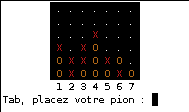

Ce tuto a pour but de créer une fonction afin de pouvoir rajouter des couleurs de texte et de fond dans la console Linux ;) , mais ce n'est pas tout : on créera aussi une fonction qui va effacer l'écran.
Bref des petits trucs marrant pour égayer un peu un programme en console.
Prêts ? Alors on y va. :D
Qu'est-ce qu'on doit savoir pour faire ça ?
Il faut avoir suivi les cours de M@teo jusqu'aux directives préprocesseur et avoir compris de préférence :p .
PS : pour les windowsiens vous pouvez aller voir le tuto de guimers8 ;)
On va commencer doucement en créant une fonction qui va effacer l'écran.
Mais heu... on peut pas le faire avec system("clear"); o_O
Si,si bien entendu mais celle-ci nous permettra d'éviter d'utiliser system(); ^^ .
Voilà l'instruction qui permet d'effacer l'écran :p :
printf("\033[H\033[2J");
Mais ça veut dire quoi ce truc ?
Pas de panique ! En fait la chaîne de caractère n'est qu'une suite de "caractères spéciaux" interprétée par la console et qui a pour résultat d'effacer l'écran.
Evidemment on pourrait écrire cette instruction à chaque fois que l'on veut effacer l'écran mais le plus simple serait de créer un header contenant tout ce dont on a besoin.
Créeons donc le fichier couleurs.h et débutons le :
Maintenant que nous savons effacer l'écran nous allons pouvoir mettre un peu de couleurs dans le texte.
Prenons l'instruction suivante :
printf("\033[%sm",param)
o_O
Ceci permet les attributs suivants :
Changer la couleur du texte
Changer la couleur de fond du texte
Faire clignoter le texte
Réinitialiser le systeme de couleur
Sympa non ? :)
Nous allons donc voir comment changer la couleur du texte dans ce paragraphe. ;)
Nous allons commencer par créer une directive préprocesseur que nous appellerons couleur() et qui prendra en paramètre les paramètres que nous passerons au printf(); afin de changer la couleur du texte.
Créons donc la directive :
#define couleur(param) printf("\033[%sm",param)
Afin de fonctionner lors de l'appel nous devrons l'utiliser comme suit :
couleur("34");
printf("test");
couleur("0");
Tu nous fais quoi là ? o_O
Ce code est constitué comme vous l'avez vu de trois instructions :
couleur("34"); met la couleur du texte en bleu.
printf("test"); écrit le mot test tout bêtement
couleur("0"); réinitialise le système de couleur.
Ok pour les deux premières instructions mais pourquoi réinitialiser ?
Cette technique a un énorme défaut : si vous ne réinitialisez pas le système de couleur, tout le reste sera affecté : oui tout ! Donc la réinitialisation permet d'éviter ce problème.
Voici la liste des paramètres pour changer la couleur. En face de chaque paramètre se trouve la couleur correspondante.
0 == réinitialisation.
Paramètre
Couleur
30
Noir
31
Rouge
32
Vert
33
Jaune
34
Bleu
35
Magenta
36
Cyan
37
Blanc
Deux autres paramètres peuvent être intéressants :
"5" permet de faire clignoter le texte. "1" active la haute intensité des caractères. "7" inverse la sélection de couleurs : si votre système est noir sur fond blanc cela deviendra blanc sur fond noir.
Voilà pour la couleur des caractères. Prochaine étape : la couleur de fond. :)
Bon maintenant que vous savez changer la couleur de la police,il serait bien de changer la couleur de fond afin de faire des contrastes. ;)
Si vous voulez obtenir un jeu de couleur dans ce style :

Il va falloir modifier la couleur de fond.
Pour modifier la couleur de fond l'instruction est exactement la même que pour la couleur :
printf("\033[%sm",param)
Ainsi notre directive précedemment écrite :
#define couleur(param) printf("\033[%sm",param)
fonctionnera aussi bien pour la couleur de la police que pour la couleur de fond du texte.
Les paramètres à donner à cette instruction sont :
Paramètre
Couleur
40
Noir
41
Rouge
42
Jaune
43
Vert
44
Bleu
45
Magenta
46
Cyan
47
Blanc
Faisons un test :
couleur("46");
printf("texte");
couleur("0");
Ce code écrira le mot texte en couleur par défaut (pas de changement de police) sur fond cyan et réinitialisera le système de couleur afin de ne pas perturber la suite de l'affichage. :)
C'est sympa ton truc mais si je veux écrire en blanc sur fond noir je le fais dans quel sens ? d'abord le fond ou d'abord la police ?
Aucune importance pour le sens car tout le système sera modifié avant l'affichage.
Et je dois faire deux fois l'instruction pour que cela fonctionne ?
Non, une seule instruction peut suffire. En effet ce code :
couleur("40;37");
printf("texte");
couleur("0");
écrira en blanc sur fond noir comme voulu.
Pour utiliser plusieurs paramètres il suffit de les séparer dans la chaine par des ";".
Et voilà maintenant vous savez tout pour changer la couleur de vos textes ainsi que celle de fond dans votre console. :D
A suivre : le fichier couleurs.h est inscrit avec commentaires afin de mieux comprendre et de l'avoir en entier. ;)
Voici le moment de mettre un petit résumé de notre fichier couleurs.h :
#ifndef COULEURS
#define COULEURS
#include <stdio.h>
// Efface l'écran et replace le curseur en haut à gauche
#define clrscr() printf("\033[H\033[2J")
// Sélection de couleurs
#define couleur(param) printf("\033[%sm",param)
/* param devant être un const char *, vide (identique à "0") ou formé
d'une où plusieurs valeurs séparées par des ; parmi
0 réinitialisation 1 haute intensité (des caractères)
5 clignotement 7 video inversé
30, 31, 32, 33, 34, 35, 36, 37 couleur des caractères
40, 41, 42, 43, 44, 45, 46, 47 couleur du fond
les couleurs, suivant la logique RGB, étant respectivement
noir, rouge, vert, jaune, bleu, magenta, cyan et blanc */
#endif
Maintenant vous allez pouvoir embellir vos programmes consoles sous Linux. Si jamais vous n'arrivez pas à faire fonctionner ce système : envoyer moi un MP avec votre distribution et votre bureau afin que je puisse faire une liste des consoles non compatibles :) .
Voilà c'est fini ! en espérant vous avoir aidé ! Maintenant vous pouvez retourner à vos activités habituelles.